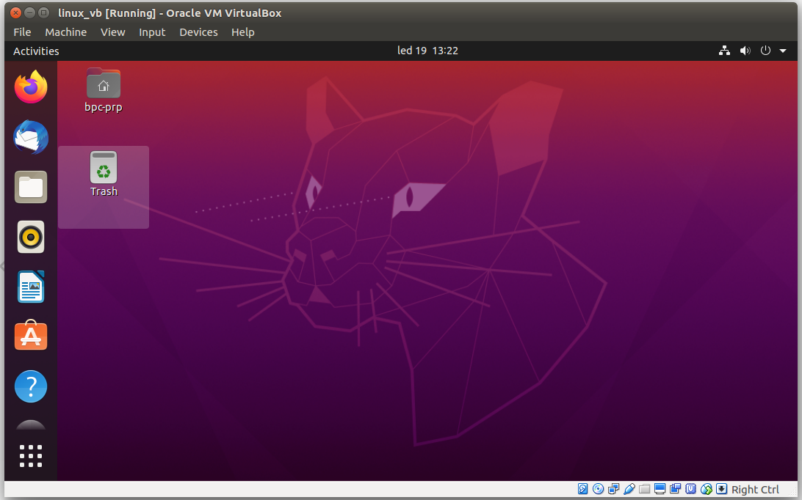

Prakticka robotika a pocitacove videni (BPC-PRP) online skripta
Tento text predstavuje online skripta a studijni materialy pro prednasky a cviceni predmetu BPC-PRP - povinneho premetu 3. rocniku bakalarskeho studiniho oboru Automatizacni a merici technika na Fakulte elektrotechniky a komunikacnich technologii Vysokeho Uceni Technickeho v Brne.
Skripta rovnez obsahuji texty tykajici se dalsich oblasti robotiky, ktere jiz ale nejsou vyzadovany samotnou naplni predmetu.
Autori
Bc. Matous Hybl
Ing. Adam Ligocki
Ing. Tomas Lazna
Ing. Petr Gabrlik
Ing. Tomas Jilek, Ph.D.
Ing. Frantisek Burian, Ph.D.
Seznam přednášek
1. Úvodní přednáška
Přednášející: Ing Petr Gábrlík
Datum: 8.2.
2. Linux, shell, virtual box, CLion
Základy principy OS Linux
Práce v příkazové řádce
Virtuální stroj
Možné způsoby vývoje aplikací na Linuxu
CLion vývojové prostředí (IDE)
Přednášející: Ing. Adam Ligocki
Datum: 15. 2. 2020
3. GIT, integrace GITu v IDE
Úvod do verzovacího systému GIT
Ovládání GITu z příkazové řádky
Decentralizace dat v GIT repozitáři
Příklad práce více vývojářů na jednom repozitáři
Integrace GITu v IDE CLIon a další GUI
Přednášející: Ing. Adam Ligocki
Datum: 22. 2. 2020
4. TCP-UDP/IP komunikace
Základy práce v GIT repozitáři
ISO/OSI a TCP/IP model
Síťové standardy IEEE 802.3, 802.11
Síťové protokoly - IPv4, UDP, TCP
Konfigurace sítě v Linuxu
Nástroje dostupné z příkazové řádky
Analýza síťové komunikace
Popis rozhraní socket API
Síťová komunikace z C/C++ aplikace
Přednášející: Ing. Tomáš Jílek, Ph.D.
Datum: 1. 3. 2020
5. Výkonová elektronika, pohony
DC motor, BLDC motor, Krokový motor, synchronní motor.
Charakteristiky a odlišnosti konstrukcí motorů
Mikrostepping u krokového motoru
Přednášející: Ing. Lukáš Kopečný, Ph.D.
Datum: 8. 3. 2020
6. Snímání vodicí čáry
Koncepce a blokové schéma implementace celého projektu
Optické snímání čáry pomocí optočlenů CNY70
A/D převod
A/D převodník AD7997
Zpracování měřených dat
Přednášející: Ing. Tomáš Jílek, Ph.D.
Datum: 15. 3. 2020
7. Kinematika a regulace pohybu podvozku robotu
Přímá a inverzní kinematická úloha pro diferenciálně řízený podvozek
Regulace pohybu podvozku
Přednášející: Ing. Tomáš Jílek, Ph.D.
Datum: 22. 3. 2020
8. Popis závěrečné soutěže, příklady možných způsobů řešení
Pravidla soutěže
Návrh možných způsobů řešení soutěže
ÚČAST POVINNÁ
Přednášející: Ing. Petr Gábrlík
Datum: 29. 3. 2020
9. Velikonoční pondělí
Přednášející: -
Datum: 19. 4. 2020
10. Robotic Operating System ROS, Rviz, vizualizace v robotice
Úvod do platformy ROS
Principy fungování
Využití rozhraní ROS
Vizualizace (RViz)
Přednášející: Ing. Adam Ligocki
Datum: 12. 4. 2020
11. Embedded systémy v robotice
TODO:
Přednášející: Bc. Matouš Hýbl
Datum: 19. 4. 2020
12. Samostatná práce na projektu
Přednášející: -
Datum: 26.4.
Seznam cvičení
1. Osnova projektu, bezpečnost (v rámci přednášky, cvičení se nekoná)
Vyučující: Tomáš Jílek
2. Instalace Virtual Boxu, Linuxu, CLionu
Vyučující: Adam Ligocki
3. Práce s GITem, zprovoznění simulátoru
Vyučující: Adam Ligocki
4. UDP komunikace se simulátorem, NEMEA protokol
Vyučující: Tomáš Lázna
5. Konzultační týden (samostatná práce)
Vyučující: osobní konzultace s příslušným vyučujícím po předchozí domluvě
6. Ovládání motorů simulovaného robota
Odpovědnost: Matouš Hýbl
7. Snímání čáry v simulátoru
Vyučující: Tomáš Jílek
8. Konzultační týden (samostatná práce)
Vyučující: osobní konzultace s příslušným vyučujícím po předchozí domluvě
9. Návrh regulátoru pro sledování čáry
Vyučující: Tomáš Jílek
10. Telemetrie a vizualizace
Vyučující: Adam Ligocki
11. Samostatná práce na projektu (samostatná práce)
Vyučující: osobní konzultace s příslušným vyučujícím po předchozí domluvě
12. Samostatná práce na projektu (samostatná práce)
Vyučující: osobní konzultace s příslušným vyučujícím po předchozí domluvě
Kapitola "Softwarové vybavení" má za úkol seznámit Vás se základy práce s operačním systémem Linux, ovládání verzovacího systému Git, použití vývojového prostředí CLion, dále dát Vám povědomí o ROS (Robotic Operating System) a jako poslední, ale nejdůležitěnjí, provést Vás přípravou prostředí, ve kterém budete řešit projekt v rámci předmětu BPC-PRP.
Podkapitoly:
Linux a příkazová řádka (terminál)
Tuto kapitolu berte jako rozcestník pro práci v operačním systému Linux.
Není potřeba znát všechny příkazy, včetně jejich parametrů z paměti, avšak měli by jste mít o nich povědomí a případně na internetu, či v Linux manuále být schopni dohledat jejich přesný způsob použití.
Přehled příkazů v terminále
příkaz
vysvětlení funkce
příklad použití ... vysvětlení
ls - (list)
Vypiš všechny soubory a složky (složka je taky typ souboru) v aktuálním bodě file systému.
ls
ls -la ... vypíše všechny soubory, včetně sktytých a přidá k výpisu detailní informace
cd - (change directory)
Změna složky.
cd my_directory ... přesun do adresáře s názvem my_directory
cd ~ ... návrat do domovské složky (v linuxu nazýváme "home")
cd .. ... návrat o adresář výš (dvojtečka)
cd / ... návrat do kořene file systému (v linuxu nazýváme "root")
cd ../my_folder ... vrať se o adresář výš a pak se přesuň do adresáře "my_folder"
cd . ... přesuň se do "současného adresáře". V podstatě nic neudělá. Příklad ilustruje existenci symbolu pro aktuální adresář (tečka).
pwd - print working directory
Vypíše aktuální pozici ve file systému.
pwd
mkdir - (make directory)
Vytvoření nového adresáře.
mkdir my_folder ... vytvoří nový adresář s názvem "my_folder"
cp - (copy)
Kopíruje soubor.
cp zdrojovy_soubor cilovy_soubor ... vytvoří novou kopii zdrojovy_soubor nazvanou cilovy_soubor
cp ../secter.txt secret_folder/supersecret.txt ... vem soubor secret.txt, který se nachází o složku výš a zkopíruj ji do složky secret_folder. Kopie původního souboru se bude jmenovat "supersecret.txt"
mv - (move)
Příkaz původně pro přesun souboru, hlavně se však využívá pro přejmenováni soborů.
mv old_name.txt new_name.html ... přejmenuje soubor "old%name.txt" na "new_name.html"
rm - (remove)
Smaže soubor/složku.
rm old_file.txt ... vymaže soubor "old_file.txt"
rm -r my_folder ... smaže složku. Při mazání složky vždy musíme použít modifikátor rekurze (-r). Ten říká, že se má rekurzivně smazat také obsah složky.
chmod - (change mode)
Změní přístupová práva k souboru.
chmod 777 /dev/ttyUSB0 ... umožní všem uživatelům PC přístup na USB port s pořadovým číslem 0. Pro detail fungováni přístupových práv ve file systému viz [7].
sudo
Meta příkaz. Operace provedená v rámci tohoto příkazu bude provedena v režimu oprávnění administrátora operačního systému. Obvykle používáme, když zasahujeme do systémových souborů.
sudo mkdir /etc/config ... vytvoří složku "config" v systémovém adresáři "/etc".
sudo rm -r / ... příkaz rekurzivně smaže celý adresář "root" (v podstatě smaže celý disk včetně OS)
cat - (Concatenate FILE(s) to standard output)
Program vypíše do termínálu obsah souboru.
cat ~/my_config_file.txt ... vytiskne v terminále obsah zvoleného souboru
man - (manual) referenční manuál operačního systému
Rychlá pomoc když zapomenu, jak pracovat s daným programem
man ls ... vytiskne v terminále manuál k programu ls
Distribuce Linuxu
Hovoříme-li o Linuxu, máme na mysli jádro operačního systému, které je zpravováno autoritou (tvůrce linuxu Linus Torvards) a ta zajišťuje integritu veškerého kódu, který je do jádra OS zaintegrován.
Nad jádrem operačního systému je však nádstavka balíčkovacích systémů, grafického rozhraní, a dalšího podpůrného software. Distribucí se v Linuxu rozumí balíček těchto podpůrných software, který je dodáván a garantován konkrétní právnickou osobou (komerční subjekt, organizace, atd.).
Často používané distribude:
Debian - nejrošířenější distribuce Linuxu.
Ubuntu - derivát Debianu. Nejrozšířenějí distribuce na domácích stanicích.
Mint - derivát Ubuntu. GUI se blíží Windows.
RaspberryOS (dříve Raspbian) - derivát Debianu pro Raspberry Pi
Arch Linux - Distribuce orienovaná na profi uživatele - velká volnost při konfiguraci systému
Fedora - Alternativa k Debianu.
ElementaryOS - Minimalistická a rychlá distribuce. Vhodná pro slabé počítače.
... mnoho dalších
Orientace v systému
Souborová struktura Linuxu se odvozuje od tzv. kořene (root), který značíme jako / (vzdáleny ekvivalent C:/ na Windows).
V kořenovém adresáři pak nalezneme složky jako:
- bin/ - obsahuje binárky (spustitelné soubory operačního systému).
- home/ - adresář, který obsahuje domovské složky uživatelů.
- dev/ - obsahuje soubory které mapují fyzické interfacy počítače (interní a externí disky, sériovou linku, usb, síťové rozhraní, atd.).
- tmp/ - temporary složka. Zde si programy odkládají svá dočasná data.
- media/ - místo kde se mountují (připojují) externí disky.
- etc/ - složka obsahuje klíčové systémové soubory.
Po příhlášení se obvykle nacházíte v domovském adresáři, tj na místě /home/<jmeno_uzivatele>/
Základní programy
apt
Jedná se o Balíčkovací systém Debianu. Na Linuxu nejčastěji instalumeme programy tak, že si jej stáhneme z veřejného repozitáře, tedy obvykle ověřeného a bezpečného serveru.
Při instalaci musíme vždy disponovat administrátorskými právy.
Příklad instalace Gitu:
sudo apt update
sudo apt install git
Říkáme: "s administrátorskými právy zavolej program apt a aktualizuj si záznamy o repozitářích", a "s administrátorskými právy zavolej program apt a ten neinstaluje git".
nano
Editace textu podobná poznámkovému bloku
Ctrl + X - ukončení programu. Program se zeptá, zda má uložit změny
vim
Profi editace textu. Ovládání programu je však poněkud složitější a vyžaduje pochopení několika principů. Práce s vim je však mnohonásobně rychlejší než s nano. Před použitím doporučuji projít libovolny "vim noob tutoriál" na youtube.
Kdyby se Vám přeci jen povedlo vim zapnout, vězte že jej vypnete kobinací kláves Shift + Z + Z (držíme shift a dvakrát zmáčkneme klávesu 'Z').
mc
Midnight Commander - grafické prostředí pro pohyb v souborovém systému. Připomíná MS Dos.
Vypíná se klávesou F10.
curl
Nástroj přikazového řádku pro přenos dat mnoha protokoly. Curl je často používán pro http komunikaci, instalaci programu, či stahování souborů.
wget
Program pro stahování souborů ze sítě.
Příklad stažení posledního releasu wordpresu:
wget https://wordpress.org/latest.zip
Slovo na závěre
Pokud jste v Linuxu nováčky, hlavně se nebote experimentovat. Ideálně si nainstalulte systém do Virtual Boxu a udělejte si zálohu virtuálního disku. Když se Vás podaří systém rozhasit, stačí si natánout backup a jedete dál.
Git - Verzovací systému
Git je distribuovaný systém pro verzováni a management zálohování zdrojových kódů. Obecně ale Git funguje dobře pro verzování libovolného textu. Primární motivací k výuce Gitu v rámci tohoto předmětu je fakt, že Git je dnes nejrozšířenějí verzovací systém v konerční svéře a zároveň je na webu dostupná obrovská paleta Git-based online verzovacích služeb.
Základní terminologie
Vymezme si několik základních pojmů, abychom si rozuměli.
repozitář (repo)
Sada verzovaných souborů a záznamy o jejich historii. Pokud je repozitář uložen na našem počítači, nazýváme jej lokální repozitář (local repo). Jeli uložen na jiném stroji, hovoříme o vzdáleném repozitáři (remote repo).
klonování (cloning)
Stažení repozitáře z remote repa. Klonujeme v okamžiku, kdy na lokálním počítači repozitář neexistuje.
snapshot
Stav repozitáře v konkrétním bodě v historii.
diff
Rozdíl mezi dvěmi snapshoty. Tedy rozdíl stavu verzovaných souborů.
commit
Záznam, který obsahuje referenci na předchozí, následujicí snapshot a diff mezi nimi. Zároveň každý commit má svůj unikátní dvaceti bytový hash, který jej jednoznačně identifikuje v rámci repozitáře.
push
Nahrání nových comitů na remote repo.
fetch
Stažení commitů z remote repo na lokál. Fetchujeme, pokud na lokále máme repozitář naklonovaný, ale nemáme stažené nejnovější commity.
větev (branch)
Řetězec na sebe navazujicích commitů. Ze základu má každý repozitáž jednu větev ("master", někdy "main"). Probíha-li však vývoj několika funkcionalit vedle sebe, je možné tyto vývoje rozdělit do zvláštnich větví a připojit je spátky k hlavní větni, až je funkcionalita dokončená.
Princip fungování
Primární funkcí Gitu je verzování textových souborů. Jedním dechem je potřeba dodta, že Git NENÍ vhodny pro verzování binárních souborů. Vyvíjíme-li tedy program a verzujeme vývoj v Gitu, vždy verzujeme pouuze zdrojové kódy, nikdy ne zkompilované spustitelné soubory (binárky).
Zároveň Git umožňuje velmi efektivní spolupráci mnoha lidí na stejném projektu (repozitáři). Vývojáři mohou pracovat společně, případně každý na separátním branchi. Důležité pravidlo však je, že dva lidé nesmí přepsat stejný řádek kódu ve dvou různých commitech. To způsobi tzv. konflikt. Obecné doporučení je, aby dva lidé neměnili stejný soubor.
Ve srovnání s SVN je ale Git tzv. decentralizovaný systém. To znamená, že v systému repozitářů neexistuje žaden nadřazeny, důležitější repozitář, či něco ve smyslu centrálního serveru. Všechny repozitáře mají stejnou funkcionalitu a jsou schopny udržovat kompletní historii celého repozitáře a ponohodnotně komunikovat se všemi ostatními klony. Praxe je však taková, že obvykle existuje repozitář, který funguje jako centrální místo pro výměnu commitů mezi vývojáři. Takový repozitář se obvykle jmenuje "origin". Důležité však je, že kterýkolik repozitář, si může z originu stáhnout kompletní historii a tak v případě selhání originu nedojde ke ztrátě dat, protože každý vývojář může mít jeho plnohodnotnou kopii na svém počítačí.
Obvykla práce s Gitem vypadá následovně:
- Na serveru vytvoříme repozitář projektu.
- vývojáři si naklonujou repozitář na lokální počítače. Z jejich pohledu loklálních repozitářů je server tzv "origin".
- vývojáři na lokálních počítačích vytváří kód a commitujou.
- na konci dne každý vývojáž pushne (nahraje) své denní commity na origin.
- na druhý den ráno si každý fetchne (stáhne) commity kolegů z dne předchozího.
Instalace Gitu na Linuxu
V případě, že pracujeme na distribuci Debian, Git nainstalujeme následovně:
sudo apt install git
nebo
sudo snap install git
Přehled příkazů
git init
Inicializace repozitře. Z obvyklé složky v souborovém systému vytvořím repozitář.
Repozitář se od obyčejné složky liší tím, že v sobě obsahuje skrytou složku s názvem .git a ta obsahuje historii repozitáře.
git init ... inicializuje repozitář
git add
Příkaz přidává změny vytvořené od posledního commitu do tzv. indexu. Index je soubor změn, které budou součástí nejbližšího commitu. Díky mezistupni index je možné commitnout jen některé změny, které jsme od posledního commitu vytvořili.
git add myfile.txt ... přidá do indexu změny provedené nad souborem myfile.txt
git add . ... přidá do indexu všechny aktuální změny
git commit
Vytvoř nový commit, který je odvozený od posledního commitu v současné větví, a zahrni do commitu změny (diffy), které jsou v indexu.
git commit -m "komentář k danému commitu" ... vytvoří nový commit v rámci větve, ve které se nacházíme
git checkout
Příkaz slouží k přecházení mezi snapshoty.
git checkout . ... vrať větev do stavu posledního commitu (zahoď všechny do té doby vytvořené změny)
git checkout abcdef ... přepni mě do stavu, který vznikl po commitu s hexadecimálním označením abcdef
git checkout master ... přepni mě do stavu posledního dostupného commitu na větvi master
git clone
Příkaz vytvoří klon vzdáleného repozitáře na lokále. Klonujeme-li, není potřeba inicializovat repozitář pomocí git init. Metadata repozitáře se stáhnou automaticky s obsahem.
git clone https://adresa_vzdaleneho_repozitare.git ... vytvoří klon daného repozitáře na lokálním stroji
git remote
Příkaz vytvoří klon vzdáleného repozitáře na lokále. Klonujeme-li, není potřeba inicializovat repozitář pomocí git init. Metadata repozitáře se stáhnou automaticky s obsahem.
git remote -v ... vypíše konfiguraci vzdálených repozitářů
git remote add origin https://adresa_repozitare.git ... přidá do lokálního repozitáře alias vzdáleného repozitáře s danou adresou
git remote remove origin ... smaže alias origin na vzdálený repozitář
git push
Odešle nové commity vytvořené na lokále na vzdálený repozitář.
git push origin master ... odešle na mastera nové commity vytvořené v rámci větvě (branche) master
git fetch
Stáhne z remotu commity do lokálního repozitáře. Stažené komity se ale nestanou součástí větve. Změny zůstanou pouze zapsány v paměti.
git fetch origin ... stáhne nové commity ve všech větvích z originu na lokál
git fetch origin master ... stáhne nové commity pouze pro větev master z originu na lokál
git merge
Na aktuální větví vytvoří nový commit tak, že spojí naagregované diffy dvou různých větví. Tím pádem se v součacné větvi objeví všechny změny, které byly vytvořeny v jiné větví. Větve se tak spojí.
git merge cool_branch ... na současné větví vytvoří nový commit, který obsahuje všechny změny větve cool_branch
git pull
Kombinace příkazů git fetch a git merge. Obvykle se používá při stažení změn ze serveru. Příkaz nejprve stáhne commity z vzdáleného repozítáře (provede fetch) a následně je připojí do současné větve (provede merge).
git pull origin master ... stáhne z originu nové commity na větvi master a přidá je do lokální větve master
git diff
Vytiskne rozdíl stavu repozitáře mezi dvěma commity.
git diff abcdef 012345 ... vytiskne rozdíl mezi commity, které jsou identifikovány hexadecimálními hashy abcdef a 012345
git status
Zobrazí současný stav změn provedených od posledního commitu, včetně zobrazení změn, které jsou již přidány do indexu.
git status ... vytiskne současný stav změn
git log
Vytiskne chronologicky výpis commitů spolu s jejich metadaty (časem vytvoření commitu, popiskem, identifikačním hashem, atd.)
git log ... vytiskne historii současné větve
git stash
Slouží pro ukládání a načítání změn do zásobníku. Vhodné například, když si všimnete, že píšete kód na jiné větvi, než byl záměr. Pomocí git stash uložíte změny do zásobníku, přepnete se na jinou větev a změny si ze zásobníku vytáhnete.
git stash ... Uloží změny provedené od posledního commitu do zásobníku a vrátí větev do stavu, v jakém byla po posledním commitu (jako by jste zdrojový kód nikdy nenapsali).
git stash pop ... Vytáhne změny uložené ze zásobníku a aplikuje je na současný stav (jako by jste kód právě ručně napsali).
Cvičení
Několik scénářů se kterými se můžete během vývoje software potkat. Vyzkoušejte si je opakovaně, aby jste si vryli do paměti způsob práce s Gitem. Zároveň doporučuji si příklady nejprvé projít v příkazové řádce, aby jste chápali zůpsob, jakým Git funguje na nejnižší vrstvě a následně si cvičení absolvovali i v grafickém rozhraní Vašecho vývojového prostředí.
Základní obsluha
- Vytvořte si repozitář.
- Vytvořte v něm 2 textové soubory a do každého napište několik řádků.
- Přídejte provedené změny do indexu a následně změny commitněte.
- Nyní zeditujte jeden soubor a opět jej commitněte.
- Zeditujte druhý soubor a změny commitněte.
- Vytvořte si účet na GitHubu, a založte si tam nový repozitář.
- Přidejte vzdálený repozitář jako "origin" do lokálního repozitáře a pushněte změny na origin.
- Ve vebovém prostředí ověřte obsah repozitáře.
- Na jiním místě v počítači, nebo na jiném počítači si naklonujte právě pushnutý repozitář.
- V novém klonu proveďte změnu a commitněte jí pushnete na origin.
- V původní složce pullněte nové commity z originu.
- Příkazem git log si prohlédněte historii.
Konflikt
Příklad, co se stane, když dva vývojáří změní tentýž kód.
- Po vzoru předchozího cvičení si vytvořte na počítači, případně na dvou počítačích dvě kopie repozitáře, který bude mít společný origin na webu.
- V prvním klonu upravte konkrétní řádek souboru, commitněte a pushněte.
- V druhém klonu upravte tentýž řádek, commitněne a pushněte (push zahlásí chybu).
- Nyní jsme si vyrobili konflikt. Ve stejném bodě v historii větve repozitáře proběhly dvě změny,které se navzájem vylučují (tzv. conflict).
- Konflikt opravíme tak, že v druhém klonu, který nedokázal pushnout provedeme pull z originu.
- Nyní nahlédněme do souboru, který obsahuje konflikt. Konflikt je označen speciální syntaxí <<<<<<< lokalni_zmena ======= zmena_z_originu >>>>>>>. Vyberte verzi, která je žádoucí a speciální syntaxi odstraňte. Tím je konflikt vyřešen.
- Zavolejte příkaz git commit bez dalších parametrů a provede se commit s automatickým popiskem, že se jedná o řešení konflitku.
- Pushněte nový commit na origin a poté pullněte jej v původním repozitáři.
- Příkazem git log si prohlédněte historii.
Doporučené materiály
Užitečný rádce při potížích s Gitem (cs)
Remote development v prostredi CLion
Clion je integrované vývojové prostředí vyvíjené firmou JetBrains. Jedná se o zajímavou alternativu ke konvenčním prostředím jako je například Eclipse nebo NetBeans. Oproti těmto uvedeným prostředím Clion vyčnívá zejména kvůli své rychlosti, přehlednosti a modernosti. Díky napojení na ekosystém firmy JetBrains je možné do studia doinstalovat spoustu rozšiřujících pluginů přinášejících podporu pro nové jazyky, vývojářské nástroje atp. Velkou výhodou může být i integrovaná práce s Gitem.
V tomto manuálu bude rozebráno použití prostředí Clion v předmětu BPC-PRP tedy jako nástroje pro vývoj firmware mobilního robotu založeného na platformě KAMBot. Nejprve bude stručně rozebrán build system CMake. Poté se manuál již bude věnovat CLionu a to zejména jeho instalaci, vytvoření jednoduchého projektu typu Hello World a jeho zprovoznení. Dále je popsána stěžejní kapitola tohoto manuálu, a to vzdálený vývoj umožňující vzdálené programování Raspberry Pi pomocí standardního počítače. Na konci je popsán jednoduchý projekt blikání LEDkou a kapitola zabývající se odstraňováním nejčastějších problémů se vzdáleným vývojem.
Příklady v tomto manuálu byly zpracovány ve verzi Clion 2018.3, je tedy možné, že se v budoucnosti některé postupy budou měnit.
Build system CMake
CMake je soubor nástrojů, které zjednodušují kompilaci projektů a knihoven takovým způsobem, aby byly nezávislé na operačním systému a kompilátoru. Funguje tak, že pomocí jednotného konfiguračního souboru CMakeLists.txt vygeneruje Makefile pro UNIX-like systémy a pro Windows generuje MSVC pracovní prostory. Velkou výhodou CMake je správa závislostí - aplikace si mohou definovat na jakých knihovnách jsou závislé, přičemž CMake kontroluje, jestli jsou tyto knihovny dostupné a navíc v požadované verzi. Další velkou výhodou je možnost vytvářet jak spustitelné soubory tak knihovny pomocí jedné jednoduché konfigurace umístěné v CMakeLists.txt.
Ukázkový soubor CMakeLists.txt pro aplikaci:
cmake_minimum_required(VERSION 3.7)
project(MyCoolRobot)
set(CMAKE_CXX_STANDARD 17)
add_executable(MyCoolRobot main.cpp)
Ukázkový soubor CMakeLists.txt pro knihovnu:
cmake_minimum_required (VERSION 3.7)
project (MyCoolLibrary VERSION 0.1 LANGUAGES CXX )
include(GNUInstallDirs)
set (CMAKE_CXX_STANDARD 17)
file (GLOB SOURCES src/*.cpp )
file (GLOB HEADERS include/*.h)
add_library(libmycoollibrary ${SOURCES})
target_include_directories(libmycoollibrary PUBLIC
$<BUILD_INTERFACE : ${CMAKE_CURRENT_SOURCE_DIR}/include>
$<INSTALL_INTERFACE : include>
PRIVATE src)
install (TARGETS libmycoollibrary EXPORT MyCoolLibraryConfig
ARCHIVE DESTINATION ${CMAKE_INSTALL_LIBDIR}
LIBRARY DESTINATION ${CMAKE_INSTALL_LIBDIR}
RUNTIME DESTINATION ${CMAKE_INSTALL_BINDIR})
install(DIRECTORY include/DESTINATION ${CMAKE_INSTALL_INCLUDEDIR})
install(EXPORT RoboUtilsConfig DESTINATION share/MyCoolLibrary/cmake)
export(TARGETS libroboutils FILE MyCoolLibraryConfig.cmake)
V případě, že máme nějaký projekt, který používá CMake a chceme jej spustit, provedeme to pomocí příkazů:
cd MyCoolRobot
cmake .
make
./MyCoolRobot
Instalace CLion
Instalace CLion probíhá pomocí stažení instalačního balíčku ze stránky https://www.jetbrains.com/clion/ po kliknutí na "GET FREE 30 DAY TRIAL". Studenti mají nárok na bezplatné využívání plné verze po dobu studia, což se ostatně týká všech produktů firmy JetBrains. Získání plné verze je možné pomocí postupu na stránce https://www.jetbrains.com/student/. Po stažení instalačního balíčku provedeme instalaci standardním způsobem podle zvyklostí jednotlivých operačních systémů.
Hello World Projekt
Nejprve vytvoříme jednoduchý HelloWorld projekt, ve kterém se seznámíme s procesem vytvoření projektu, prostředím a vývojem na lokálním počítači. Po spuštění CLion nás přivítá úvodní obrazovka se seznamem naposledy otevřených projektů, kde klikneme na tlačítko "New Project".

Po kliknutí se nám otevře okno s konfigurací nového projektu, kde nastavíme cestu, kde chceme mít projekt vytvořený a standard jazyka C++, v našempřípadě C++17.

Po kliknutí na "Create" nás přivítá samotné vývojové prostředí tak jak je zobrazeno na obrazku.
Pojďme se nyní podívat, co se na obrazovce nachází.

- podokno s aktuálně editovaným zdrojovým kódem
- aktuálně otevřené soubory
- soubory v projektu
- zleva: kompilace projektu, výběr targetu, kompilace a spuštění, kompilace aspuštění v debug módu
Verze CMake dodávaná v Raspbianu je bohužel relativně stará, zatím co CLion předpokládá použití relativně novou verzi, pro vyřešení tohoto problému je nutné změnit v souboru CMakeLists.txt verzi CMake z 3.12 na 3.7 tak jak je zobrazeno ve výpisu:
NOTE: Dnes jiz pravdepodobne neplati a Raspbian obsahuje znatelne novejsi verzi CMake.
cmake_minimum_required(VERSION 3.7)
project(HelloWorld)
set(CMAKE_CXX_STANDARD 14)
add_executable(HelloWorld main.cpp)
Nyní klikneme na tlačítko pro kompilaci a spuštění, kdy se nám nejprve ve spodní části obrazovky zobrazí okno s průběhem kompilace a následně s konzolí spuštěného programu:

Při debugování se breakpointy přidávají kliknutím vedle čísla řádku. Po přidání breakpointu je nutné program spustit v debug módu v horní části okna. Po kompilacise ve spodní části zobrazí okno debuggeru. Navigace v debuggovaném kódu probíhá pomocí šipek v debuggovacím okně.
Pro přidání nové třídy do projektu klikneme v podokně se soubory projektu na náš projekt pravým tlačítkem, najedeme na "New" a tam zvolíme "C/C++ Class", jak je zobrazeno na obrázku.
Při přidávání a odebírání souborů je nutné, aby všechny .cpp soubory byly uvedeny v CMakeLists.txt.
CLion obsahuje spoustu funkcí a možností, jejichž popsání je zcela nad rámec tohoto návodu, doporučuji tedy si s ním pohrát a vyzkoušet, co všechno se v něm dá dělat a jak efektivně. Dobré je rovněž si všímat toho, když je řádek označený žlutě, většinou se jedná o CLion doporučující nějaké zlepšení kódu.
Vzdálený vývoj
Vzdálený vývoj (remote development) znamená, že výpočetně náročné vývojové prostředí běží na běžném počítači, zatímco kompilace a spouštění programu probíhána cílovém počítači. Tímto způsobem lze například velmi pohodlně programovat embedded hardware případně servery. Velká výhoda je, že například jde z Windows nebo MacOS programovat aplikace pro Linux, což nemusí vždy být možné kvůli chybějícím knihovnám napřiklad i2c-dev. Funkcionalita vzdáleného vývoje byla doprostředí CLion přidána ve verzi 2018.3.
Pro nakonfigurování vzdáleného vývoje je nutné nejprve přejít do nastaveníprostředí CLion (Preferences). Zde ve stromu vybereme "Build, Execution, Deployment" a položku "Toolchains" viz obrazek. Dále klikneme na tlačítko "+".

Následně vyplníme jméno toolchainu a volbu "System" přepneme na "RemoteHost" tak, jak je to zobrazeno na obrazku. Následně klepneme na ikonu složky upoložky "Credentials" a nastavíme je podle konfigurace našeho robotu. Pokud konfigurace Raspberry Pi nebyla měněna, lze použít hodnoty uvedené v tabulce a zobrazené na obrázku. Na Raspberry Pi musí být povoleno SSH.

| parametr | hodnota |
|---|---|
| Host | raspberrypi.local |
| Port | 22 |
| User name | pi |
| Password | raspberry |
Po kliknutí na OK, se CLion pokusí připojit k danému Raspberry Pi a zkontroluje,zda jsou všechny potřebné programy k dispozici. Připojování je vidět na obrazku a úspěšné připojení je vidět na dalsim obrazku.

Dalším důležitým krokem je konfigurace CMake, ta se provádí rovněž v okně Preferences tak jak je zobrazeno na obrazku.
Po kliknutí na "+" nakonfigurujeme CMake tak aby používal náš nový toolchain,tak jak je to zobrazeno na obrázku a klikneme na OK.

Po kliknutí na OK proběhne upload souborů na Raspberry Pi, po uploadu je nutné přepnout konfiguraci CMake na naši nově vytvořenou jak je zobrazenona obrazku.


Poté následuje reload konfigurace jak je zobrazeno na obrazku.
Po kliknutí na tlačítko kompilace a spuštění se náš firmware zkompiluje naRaspberry Pi a spustí se, tak jak je vidět na obrazku, kdy úspěch poznáme podle toho, že se spustitelný soubor spouští z adresáře tmp.
Vzdálený vývoj je nyní nakonfigurován a měl by fungovat téměř bez problémů, častým problémům je věnována kapitola Troubleshooting.
Troubleshooting
V této kapitole bude rozebráno řešení problémů vznikajících při použití vzdáleného vývoje.
CMake 3.12 is required. You are running version 3.7.2
Problém je ve vašem CMakeLists.txt, změňte parametr "cmake_minimum_required".
V Raspberry Pi chybí požadované soubory
Po kliknuti na slozku projektu v levem panelu, kliknete na "Deployment", "Upload to" a vyberte Raspberry Pi.
Ultimátní řešení problémů
Zkontrolujte, jestli v CMakeLists.txt jsou uvedeny všechny soubory, které se mají kompilovat. Zkuste v podokně CMake provést reload, jak je zobrazeno na obrazku. Pokud to nepomůže, přes SSH se připojte k Raspberry Pi, v /tmp smažte momentálně používanou složku pro vzdálený vývoj, restartujte CLion.
Robotic Operating System
Název "Robot Operating System" poněkud klame svým zněním. Nejedná se o samostaný operační sýstém, nýbrž spíše o middle-ware, tedy softwarový nástroj (knihovnu), který pomáha propojit dílčí programy do komplexnejšího celku. V praxi si to můžem představit tak, že máme jednoduchou aplikaci pro robota jezdícího po čáre, kterou realizujeme pomoci 3 navzájem spolupracujících programů (příklad funguje jako ilustrační; takového robota samozřejmě můžeme naprogramovat pomocí jednoho programu; ilustrujeme tím ale komplexnější problém). První program vyčítá data ze snímače a provádí jednoduchou filtraci dat. Druhý program je mozkem celého řešení a rozhoduje o pohybu robota. Třetí program pak přijímá řídicí pokyny a na jejich základě ovládá motory.
Obr: Schéma fungování pomyslého line-tracking robota na platformě Rapserry Pi s pouřitím ROSu.
V případě absence ROSu bychom museli vymyslet způsob jak tyto tři programy spolu budou komunikovat. Mohli bychom sdílet paměť, pipovat, posílat si IP zprávy, používat DBus, etc. Všechny tyto techniky fungují, ale vyžadují určitý programátorský um. My se těmito nízkouúrovňovými problémy nechceme zabývat a proto použijeme ROS.
V praxi si pak můžeme říct, že ROS komunikuje mezi procesy právě pomocí posílání UDP paketů. To umožňuje také komunikovat procesům, které běží na různých počítačích. Tomu říkáme distribuovaný systém.
Celý ROS je postaven na 4 stavebních kamenech.
- ROS Core
- ROS Node
- ROS Topic
- ROS Message
ROS Core - Zjednodušeně řečeno se jedná o IP server, který zajištujě propojení programů (Nodů), které si chtějí vyměnovat data (Message) . Core nativně otevře port 11311 na localhostu a čeká na příchozí komunikaci.
ROS Node - Nodem je myšlený každý program do kterého přídáme klinetskou knihovnu ROSu. Naučíme tedy program používat funkce ROSu.
ROS Topic - Doména, ve které se posílá specifický okruh ROS Messagů.
ROS Message - Jedna instance odeslané zprávy. V rámci ROSu je možné posílat jenom zprávy, které jsou striktně zadefinovány a mají svůj jasně daný formát. Často obsahují také časovou značku, kdy byly odeslány.
Dále si zadefinujme dva typy postavení ROS Nodů při komunikaci.
Subscriber - ROS Node, který přijímá všechny zprávy v rámci daného ROS Topicku.
Publisher - ROS Node, který vytváří a odesíla zprávy v rámci daného ROS Topicku.
Náš robot-sledující-čáru příklad si pak můžem ilustrovat takto:

Nejprve zapneme ROS Core, tedy server, který začte poslouchat příchozí komunikaci. Dále si napíšeme zmíněne 3 programy. Jeden pro čtení dat ze snímače, druhý pro rozhodování, jak se pohybovat a třetí pro ovládání motorů. První program (Node) se přihlásí k serveru, jako publisher pro topick "SensorData". Druhý se přihlásí serveru, jako subscriber v tomtéž topicku. Server si tyto dva nody poznamená a publisherovi odešle informaci, že je v sídi na dané adrese a portu připravený subscriber, který si vyžádal data z topicku, který oba nody sdílí. Když pak první program přečte data ze snímače, vyfiltruje je a vytvoří z nich message, kterou pošle na dříve obdrženou adresu a port, aby data obdržel subscriber. Obdobným způsobem se vymění data i mezi druhým a třetím programem, pouze pod hlavičkou jiného topicku.
Nyní máme vytvořené všechny tři programy. Ty spolu komunikují, ale robot přesto nefunguje podle přestav. Tušíme, že chyba je v tom, jak druhý program převádí data ze snímače na pohyb kol. Proto si napíšeme 4. program, který bude poslouchat veškerou komunikaci a bude ji logovat do souboru. Náš nový program tedy bude subscriberem pro oba dříve zavedené topicky "SensorData" a "MotorControl". V okamžiku kdy tento program zapneme, tak se ohlásí serveru a od tohoto okamžiku všechny zprávy odeslané v topicích "SensorData" a "MotorControl" budo poslány také našemu logovcímu programu. Ten zprávy přijíme a jejich obsach včetně časové značky vytiskne do souboru. Když se pak do souboru podíváme, zjistíme, že plánovací program vatváří akční zásah vždy s opačným znaménkem, proto přídáme "-" do výpočtu akčního zásahu a vše začne fungovat.
Instalace ROSu
Tento návod je pouze českým přepisem oficiální dokumentace (Instalace pro Ubuntu)[http://wiki.ros.org/noetic/Installation/Ubuntu]. Prim8rn2 prosím používejte oficiální verzi. Tento návod je pouze doprovodný.
Instalace je doporučená na distribuci Ubuntu 20.04 LTS (long term stable). Instalovat budeme verzi ROSu z roku 2020, Noetic.
Přidáme do Linuxu repozitáře (servery) ze kterých je možné stáhnout ROS.
sudo sh -c 'echo "deb http://packages.ros.org/ros/ubuntu $(lsb_release -sc) main" > /etc/apt/sources.list.d/ros-latest.list'
Přidáme do systému klíč pro zabezpečenou komunikace s repozitářem.
sudo apt-key adv --keyserver 'hkp://keyserver.ubuntu.com:80' --recv-key C1CF6E31E6BADE8868B172B4F42ED6FBAB17C654
Necháme baličkovací systém načíst nově přidaná data.
sudo apt update
Samotný ROS nainstalujeme příkazem. Trvá cca 10 min.
sudo apt install ros-noetic-desktop-full
A na závěr si do souboru ~/.bashrc přídáme záznam o náčítání ROSu do proměnného prostředí, kdykoliv zapneme terminál.
echo "source /opt/ros/noetic/setup.bash" >> ~/.bashrc
source ~/.bashrc
Tvorba vlastního nodu
Vytvoříme si jednoduchou aplikaci, kte jeden node bude odesílat zprávu s pořadovým číslem a časovou značkou a druhý node zprávu přijíme, vypíše a zjisti, s jakým zpožděním zpráva došla.
Nejprve si vytvoříme tzv workspace pro náš projekt. Workspacem se myslí speciálně uspořádaná složka.
cd ~/
mkdir ros_ws
cd ros_ws
mkdir src
cd src
C++ Node
Dále si pomocí catkinu (balíčkovací nástroj pro ROS) necháme vztgenerovat nový balíček (package).
catkin_create_pkg cpp_publisher std_msgs roscpp
Příkaz nám říká, že budeme volat program catkin_create_pkg a chceme po něm, aby nám vytvořil balíček cpp_publisher a připojil k němu knihovny std_msgs, která obsahuje základní sadu ROS zpráv a taktéž knihovnu roscpp, což je základní knihovana pro implementaci ROS Nodu v C++.
Nyní se náš balíček skládá z několika následujícíh souborů
~/ros_ws/src/cpp_publisher/
include/
src/
CMakeLists.txt
package.xml
Do adresářů include a src budeme ukládat naše zdrojové kódy a soubory CMakeLists.txt a package.xml slouží ke kompilaci balíčku.
CMakeLists.txt a package.xml obsahují velké množství předpřipravených direktiv, které slouží složitějším příkladům. Pro naše potřeby si můžeme tyto dva soubory smazat.
cd ~/ros_ws/src/cpp_publisher/
rm CMakeLists.txt
rm package.xml
Pomocí programu nano, nebo vim si oba soubory znovu vytvoříme tak a přidáme následující obsah.
nano CMakeLists.txt
cmake_minimum_required(VERSION 2.8.3)
project(cpp_publisher)
## Find catkin and any catkin packages
find_package(catkin REQUIRED COMPONENTS roscpp std_msgs)
## Declare a catkin package
catkin_package()
## Build talker and listener
include_directories(include ${catkin_INCLUDE_DIRS})
add_executable(cpp_publisher src/main.cpp)
target_link_libraries(cpp_publisher ${catkin_LIBRARIES})
a
nano package.xml
<?xml version="1.0"?>
<package format="2">
<name>cpp_publisher</name>
<version>0.0.0</version>
<description>The cpp_publisher package</description>
<maintainer email="my@email.todo">adash</maintainer>
<license>TODO</license>
<buildtool_depend>catkin</buildtool_depend>
<build_depend>roscpp</build_depend>
<build_depend>std_msgs</build_depend>
<build_export_depend>roscpp</build_export_depend>
<build_export_depend>std_msgs</build_export_depend>
<exec_depend>roscpp</exec_depend>
<exec_depend>std_msgs</exec_depend>
<export>
</export>
</package>
Nyní si můžeme vytvořit soubor main.cpp ve složce src a do něj napíšeme vlastní program
nano src/main.cpp
#include <sstream>
#include "ros/ros.h"
#include "std_msgs/Header.h"
int main(int argc, char **argv) {
ros::init(argc, argv, "cpp_publisher");
ros::NodeHandle n;
ros::Publisher publisher = n.advertise<std_msgs::Header>("/my_topic", 1);
ros::Rate loop_rate(10);
int count = 0;
while (ros::ok()) {
std_msgs::Header msg;
msg.stamp = ros::Time::now();
msg.seq = count++;
msg.frame_id = "origin";
publisher.publish(msg);
ros::spinOnce();
loop_rate.sleep();
}
return 0;
}
Nyní se vrátíme do kořene našeho workspacu a zavoláme příkaz pro build celého workspacu.
cd ~/ros_ws
catkin_make
Pokud se nevypíše žádná chyba, máme hotový publisher, který je uložený v ~/ros_ws/devel/lib/cpp_publisher.
Aby si Linux načetl nově zkompilované programy z našeho ros_ws přidámi si tento workspace do systémového prostředí (environmentu).
source ~/ros_ws/devel/setup.bash
Abychom tuto akci již nemuseli opakovat přidáme si tento řádek také do ~/.bashrc
echo "source ~/ros_ws/devel/setup.bash" >> ~/.bashrc
Nyní si otevřeme další 2 terminály tak, abychom celkem měli 3 okna terminálu. V jednom aktivujeme roscore
roscore
Ve druhém námi vytvořený publisher.
rosrun cpp_publisher cpp_publisher
A ve třetím si poslechneme zprávy na topicku /my_topic
rostopic echo /my_topic
Pokud vidíte v terminále výpis zpráv, vše pracuje, jak má.
Python Node
Vytvoříme si další balíček pomocí
cd ~/ros_ws/src/
catkin_create_pkg python_subscriber std_msgs rospy
a upravíme si strukturu balíčku tak, aby vypadala následovně.
~/ros_ws/src/python_subscriber/
bin/
python_subscriber.py
include/
src/
setup.py
CMakeLists.txt
package.xml
Složka bin bude soužit k uložení hlavního skriptu python_subscriber.py, include a src pro další zdrojové kódy, které ale dneska nevyužijeme a CMakeLists.txt a package.xml obdobně jako pro C++ příklad. setup.py slouží k instalaci pythoniho balíčku do workspacu.
Zmíněné soubory si pak upravíme následovně.
cmake_minimum_required(VERSION 2.8.3)
project(python_subscriber)
find_package(catkin REQUIRED COMPONENTS
rospy
std_msgs
)
catkin_package()
catkin_python_setup()
dále
nano package.xml
<?xml version="1.0"?>
<package format="2">
<name>python_subscriber</name>
<version>0.0.0</version>
<description>The python_subscriber package</description>
<maintainer email="my@email.todo">adash</maintainer>
<license>TODO</license>
<buildtool_depend>catkin</buildtool_depend>
<build_depend>rospy</build_depend>
<build_depend>std_msgs</build_depend>
<build_export_depend>rospy</build_export_depend>
<build_export_depend>std_msgs</build_export_depend>
<exec_depend>rospy</exec_depend>
<exec_depend>std_msgs</exec_depend>
<export>
</export>
</package>
pak
nano setup.py
## ! DO NOT MANUALLY INVOKE THIS setup.py, USE CATKIN INSTEAD
from distutils.core import setup
from catkin_pkg.python_setup import generate_distutils_setup
# fetch values from package.xml
setup_args = generate_distutils_setup(
packages=['python_subscriber'],
package_dir={'': 'src'},
)
setup(**setup_args)
a finálně
nano python_subscriber.py
#!/usr/bin/env python
import rospy
from std_msgs.msg import Header
def callback(message):
now = rospy.Time.now()
delta_t = (now.secs - message.stamp.secs)*1000000000 + (now.nsecs - message.stamp.nsecs)
print('seq: ' + str(message.seq))
print('frame id: ' + message.frame_id)
print('send time: ' + str(message.stamp.secs) + '.' + str(message.stamp.nsecs).zfill(9) + 's')
print('receive time: ' + str(now.secs) + '.' + str(now.nsecs).zfill(9) + 's')
print('delay [ns]: ' + str(delta_t))
print(30*'*')
def listener():
rospy.init_node('listener', anonymous=True)
rospy.Subscriber("/my_topic", Header, callback)
# spin() simply keeps python from exiting until this node is stopped
rospy.spin()
if __name__ == '__main__':
listener()
a přídáme souboru python_subscriber.py flag pro spouštění, aby bylo možné zapnout skript.
chmod +x ~/ros_ws/src/python_subscriber/bin/python_subscriber.py
Nyní se můžeme vrátit do kořene workspacu a vše ykompilovat.
cd ~/ros_ws/
catkin_make
Zaktualizujeme si proměné prostředí.
source ~/ros_ws/devel/setup.bash
Pokud máme aktivní roscore i cpp_publisher, pak zampene node pomocí
rosrun python_subscriber python_subscriber
a vidíme výpis přijímaných zpráv.
Pomocí programu rqt_graph si můžeme prohlédnout aktuální stav propojení nodů.
rosrun rqt_graph rqt_graph

Obr: vizualizace komunikace mezi nody pomocí rqt_graph
Rviz
Rviz je vizualizační nástroj, který je dodáván jako součást ROSu. Jedná se o aplikaci, která dokáže poslouchat širokou paletu předdefinovaných ROS zpráv a vizualizovat je v 3D grafickém prostředí.
Obvzkle Rviz používáme pro vizualizaci pointcloudů (mrařna bodů z LIDARu), obrázků z kamery, vykreslování geometrických primitiv v prostoru, vizualizace occupancy grid map, atd.
Pokud nám již běži roscore, rviz aktivujeme pomocí
rosrun rviz rviz
Vizualizaci konkrétního topicku pak aktivujeme pomocí
Add -> By topic -> [náš topick]
V sekci
Add -> By display type
vidíme všechny podporované typy zpráv (viz online dokumentace ROSu).
 Obr: příklad vizualizace pointcloudu a kamery v Rvizu
Obr: příklad vizualizace pointcloudu a kamery v Rvizu
Nyní si skusme vytvořit vlastní Node, který bude vykreslovat geometrické primitivum do RVizu. Vyjděme z příkladu cpp_ros_publishera a vytvořné následujicí program.
cd ~/ros_ws/src
catkin_create_pkg cpp_rviz_publisher std_msgs visualization_msgs roscpp
CMakeLists.txt
cmake_minimum_required(VERSION 2.8.3)
project(cpp_rviz_publisher)
## Find catkin and any catkin packages
find_package(catkin REQUIRED COMPONENTS roscpp std_msgs visualization_msgs)
## Declare a catkin package
catkin_package()
## Build talker and listener
include_directories(include ${catkin_INCLUDE_DIRS})
add_executable(cpp_rviz_publisher src/main.cpp)
target_link_libraries(cpp_rviz_publisher ${catkin_LIBRARIES})
package.xml
<?xml version="1.0"?>
<package format="2">
<name>cpp_rviz_publisher</name>
<version>0.0.0</version>
<description>The cpp_rviz_publisher package</description>
<maintainer email="my@email.todo">adash</maintainer>
<license>TODO</license>
<buildtool_depend>catkin</buildtool_depend>
<build_depend>roscpp</build_depend>
<build_depend>std_msgs</build_depend>
<build_depend>visualization_msgs</build_depend>
<build_export_depend>roscpp</build_export_depend>
<build_export_depend>std_msgs</build_export_depend>
<build_export_depend>visualization_msgs</build_export_depend>
<exec_depend>roscpp</exec_depend>
<exec_depend>std_msgs</exec_depend>
<exec_depend>visualization_msgs</exec_depend>
<export>
</export>
</package>
src/main.cpp
#include <sstream>
#include <ros/ros.h>
#include <visualization_msgs/Marker.h>
visualization_msgs::Marker createCuteCube(float pose) {
visualization_msgs::Marker marker;
marker.header.frame_id = "map";
marker.header.stamp = ros::Time();
marker.ns = "cube";
marker.id = 0;
marker.type = visualization_msgs::Marker::CUBE;
marker.action = visualization_msgs::Marker::ADD;
marker.pose.position.x = sin(pose);
marker.pose.position.y = cos(pose);
marker.pose.position.z = 0.1*sin(5*pose);
marker.pose.orientation.x = 0.0;
marker.pose.orientation.y = 0.0;
marker.pose.orientation.z = 0.0;
marker.pose.orientation.w = 1.0;
marker.scale.x = 0.1;
marker.scale.y = 0.1;
marker.scale.z = 0.1;
marker.color.a = 1.0;
marker.color.r = 0.0;
marker.color.g = 1.0;
marker.color.b = 0.0;
return marker;
}
int main(int argc, char **argv) {
ros::init(argc, argv, "cpp_rviz_publisher");
ros::NodeHandle n;
ros::Publisher vis_pub = n.advertise<visualization_msgs::Marker>( "/cute_cube", 0 );
ros::Rate loop_rate(100);
float pose = 0;
while (ros::ok()) {
visualization_msgs::Marker cube = createCuteCube(pose);
vis_pub.publish( cube );
pose += 0.01;
ros::spinOnce();
loop_rate.sleep();
}
return 0;
}
V Rvizu si pak otevřeme topic /cute_cube .
Distribuovaný ROS
Tím, že calý backend ROS-ové komunikace je postaven na IP komunikaci (UDP protokolu), je možné snadno komunikaci mezi Nody přenést i na jiné počítače v dostupné síti. Po nainstalování je ROS nakonfigurován tak, že veškerá komunikace s Corem probíha na adrese http://localhost:11311, a Nody si bindují dostupné volné UDP porty a skrze něj komunikují mezi sebou. Pokud ale nastavíme na lokálním stroji proměnnou ROS_MASTER_URI na jinou IP adresu, bude každý nově nastartovaný Node hledat svůj ROS Core na adrese uvedené v ROS_MASTER_URI.
Spojme si 2 počitáče skrze IP síť a ověřme, že na seba navzájem vidí příkazem PING.
ping xxx.yyy.zzz.qqq
Pokud oba počítače na sebe navzájem vidí, můžeme na počítači, kde chceme provozovat ROS Core nastavit proměnné, a aktivovat Core.
export ROS_MASTER_URI=http://localhost:11311
export ROS_IP=<ip_adresa_pocitace>
roscore
Na 2. počítači, kde poběží nody musíme nastavit prostředí tak aby dokázalo najít ROS Core v síti.
export ROS_MASTER_URI=http://<ip_adresa_coru>:<port_coru>
export ROS_IP=<ip_adresa_pocitace>
Ověřit nastavení proměnných můžeme příkazy
echo $ROS_MASTER_URI
echo $ROS_IP
Nyní, pokud aktivujeme publisher a subscriber na libovolném počítači v takto nastavené ROS síti, budou nody spolu komunikovat.
 Obr: příklad konfigurace ROSu na dvou počítačích.
Obr: příklad konfigurace ROSu na dvou počítačích.
Kam dál?
Tento tutoriál je popisuje pouze malý zlomek všech možných funkcionalit této obšírné platformy.
Oficiální web [1] - http://www.ros.org/
Oficiální tutoriály [2] - http://wiki.ros.org/ROS/Tutorials
Naučit se používat ROS Services [6]
Seznamy několika předdefinovaných ROS Messagů - [4] [5]
Pro zdatné ROSáky je možnost se posunout na další kvalitativní level, a totiž ROS 2 [3]. Druhá verze robotického operačního systému je již koncipováná jako real-time middleware s podporou QoS a širokou paletou služeb, které ocení zejména vývojáři sofistikovaných robotických řešení, na která bude kladeny řádově vyžší kvalitativní nároky.
Pro reálnou práci se zdrojovými kódy je vhodné použít nějaké IDE. V případě Linuxu vřele doporučuji programy od JetBrains, CLion pro vývoj C++ a Pycharm pro práci s pythonem. Oba programy jsou pro studenty VUT zdarma.
Reference
[1] http://www.ros.org/
[2] http://wiki.ros.org/ROS/Tutorials
[3] https://github.com/ros2/ros2/wiki
[4] http://wiki.ros.org/std_msgs
[5] http://wiki.ros.org/sensor_msgs
[6] http://wiki.ros.org/Services
[7] https://www.computerhope.com/unix/uchmod.htm
[8] http://wiki.ros.org/ROS/Installation
Příprava prostředí
V této kapitole stručně probereme, jak si připravit počítač tak, aby bylo možné začít vyvíjet kód pro BPC-PRP projekt.
V ideálním případě si nainstalujte Linux přímo na Váš počítač, případně je možné jej nainstalovat do virtuálního stroje.
Instalace VirtualBoxu
VirtualBox si nainstalujte podle návodu na příslušném operačním systému.
Postup pro Windows a Mac.
Pro Linux instalace záleží na distribuci a používaném baličkovacím systému. Na Debianu použijte příkaz "sudo apt install virtualbox". Poté bude možné VB aktivovat z terminálu voláním "virtualbox", nebo skrze ikonku v seznamu nainstalovaných programů.

Instalace Linuxu
Stáhněte si obraz instalačního disku Ubuntu 20.04.
Pomocí tlačítka "New" vytvořte nový virtuální stroj. Pojmenujte si jej, zvolte typ operačního systému, nastavte velikost operační paměti (vhodné 4GB a více), vytvořte nový virtuální disk, vyberte typ virtuálního disku (VDI), zvolte dynamickou alokaci disku a na poslední obrazovce vyberte umístění virtuálního disku na svém počítači a zvolte maximální možnou velikost virtuálního disku (10 - 20GB).
Nyní v hlavní obrazovce Virtual Boxu zvolte nově vytvořený virtuální stroj a přejděte do nastavení.
V záložce "System" můžete měnit velikost dedikované operační paměti, měnit počet jader procesorů, která budou pro virtuální stroj dostupná a také můžete zapínat/vypínat HW akceleraci pro virtuální stroj.
Dále v záložce "Display" světšete množství dedikované video paměti na maximum (128MB).
V záložce "Storage" klikněte na položku s obrázkem CD a následně úplně v pravo klikněte pravým na ikonku CD s malou šipečkou. Tím otevřete okno pro nastavení cesty k instalačnímu obrazu Ubuntu, které jsme dříve stáhli na počítač. Zavřete nastavení tlačítkem OK.

Nyní v hlavním okně Virtual Boxu aktivujte virtuální stroj tlačítkem start.
Pokud je vše nastaveno korektně, stroj nabootuje z instalačního obrazu.

Zvolte jazyk operačního systému (doporučeno angličtinu), zvolte rozložení klávesnice (doporučeno English US), a nechte pokračovat "Normal Installation".
Dále se Vás proces dotáže, zda chcete "Smazat disk a nainstalovat Ubuntu". Pokud nemáte konkrétní přání, jak si nastavit rozložení na disku, souhlaste s touto volbou. Systém Vám vypíše způsob, jakým rozdělí disk. Souhlaste.
Nyní zvolte časové pásmo a dále si vytvořte účet s heslem.
A dále už jen počkejte, až se systém doinstaluje a provede se reset virtuálního stoje.
Po opětovném nabootování v horní liště okna virtuálního stroje zvolte záložku "Devices" a "Insert Guest Additions CD Image". Za okamžik vyskočí okno, které se dotáže zda má aktivovat autorun vloženého CD. Souhlaste. Systém si vyžádá heslo a poté se doinstalují ovladače pro virtualizovaný hardware.
Po dalším sestartu máte připarevený virtuální stroj s nainstalovaným Linuxem Ubuntu 20.04.

Jako alternativu si stáhněte obraz virtuálního stroje s nainstalovaným Ubuntu zde.
Instalace ROS
Instalaci ROSu na nově nainstalovaný Linux proveďte pomocí návodu popsaného v kiapitole Robotic Operating System.
CLion
CLion si do nově nainstalovaného systému stáhněte z oficiálních stránek (viz CLion)
Cviceni
Instalace a seznámení se s prostředím
Cvičící: Ing. Adam Ligocki
Instalace Linux (cca 45min)
Nainstalujte si operační systém Linux Ubuntu 20.04 na fyzický stroj (preferovaná varianta), případně jako alternativu si vytvořte virtální stroj pomocí VirtualBoxu a operační systém si nainstalujte zde.
Návod naleznete zde Příprava prostředí
✅ Senzamte se se GUI systému.
✅ Otevřete si příkazový řádek, vyzkoušejtesi pohyb v souborovém systému
✅ Vytovřte, smažte soubor/složku
✅ Pomocí balíčkovacího manažeru si nainstalujte git, midnight commander (mc). Pro odvážné také textový editor vim
Nainstaloval jsem si vim a omylem jej zapnul. Co teď?
Vim vypnete touto sekvencí: stiskněte ESC, pak jej pusťte, přidržte LSHITF a dakrát klávesu 'Z'.
Pro zájemce, tutorilál práce s vim: zde
Instalace ROS (cca 45min)
Projděte si návod na Robotic Operating System. Zde si nastudujte přibližný princip fungování systému ROS aby jste později chápali jeho základní mechanizmy.
Podle návodu si nainstalujte ROS na svůj čerstně nainstalovaný operační systém.
Detailní přednáška na práci s ROSem bude v druhé polovině semestru.
✅ Zavolejte z terminálu příkaz roscore. Měl by se objevit výpis o startu programu. Neměly by být přítomny žádné chybové hlášky
✅ Voláním přžíkazu rviz ověřte, že Vám nastartuje vizualizařní program RVIZ (paralelně musí běžet roscore).
Instalace CLion (cca 30 min)
Z oficiálního webu si stáhněte IDE CLion a seznamte se s ním (viz CLion IDE). Registrací pomocí školního emailu získáte licenci na užití softwaru zdarma.
✅ Pouze prací v konzole si vytvořte jednoduchý hello world program a zkompilujte jej pomocí volání g++ kompilátoru. Otestujte funkčnost programu.
✅ Tentýž hello world program realizujte ve vývojovém prostředí CLion. Zkompilujte jej a ověřte jeho funkčnost.
✅ Diskutujte výhody práce s IDE oproti kompilaci v příkazovém řádku.
Záložní plán
Předinstalovaný obraz Ubuntu 20.04 s ROSem pro VB
https://drive.google.com/file/d/1_wCduSS30O7lHB2oYQVEErgrPAWc1ALR/view?usp=sharing
GIT, simulátor
Cvičící: Ing. Adam Ligocki
GIT (cca 1 hod)
Zaregistrujte se na studentském GitLab serveru
Tento server bude po zbytek kurzu BPC-PRP Vás tzv. "origin", tedy vzdálené repozitář.
Vyučující mají náhled do všech Vaších repozitářů, včetně jejich historii a mohou přůběžně sledovat Vaší práci, případně kdo, kdy a jak intenzivně "commitoval".
Na serveru si vytvořte repozitář, ve kterém budete udržovat kód po zbytek kurzu.
V rámci týmu si vyzkoušejte následujicí cvičení.
✅ Jeden člen vytvoří repozitář na serveru.
✅ Všichni členové si naklonují repozitár k sobě na PC.
✅ Jeden člen týmu vytvoří na lokále hello world program a "commitne" jej, a "pushne" jej na origin.
✅ Zbytek týmu si "pullne" změny k sobě na lokál.
✅ Dva členové týmu si skusí vyrobit konflikt tak, že zároveň změní stejný řádek v kódu a pokusí se jej pushnout na server. Druhému v pořádí, který se pokusí o push, git zahlásí chybu.
✅ Nešťastný člen týmu, který má nahlášený konflikt, se pokusí o jeho "fix" a opravenou verzi pushne na origin.
✅ Všichni členové týmu si pullnou aktuální verzi repozitáře. A každý člen týmu si vyrobí vlastní .h soubor a v něm funkci, která vytiskne jeho jméno. Všichni pushnou změny na server.
✅ Jeden člen týmu si pullne nově vytvořené .h soubory a upraví hello world program tak aby využíval všechen nově vytvořený kód. Změny pushne na origin.
✅ Všichni si pullnou aktuální stav repozitáře.
Simulátor (cca 30 min)
Ze stránek kurzu si pullněte aktuální stav repozitáře.
Repozitář obsahuje ve složce "bin/" skompilovanou binárku simulátoru nazvanou "simulator". Pokud máte korektně nainstalovaný ROS, otevřete si 3 terminály
Tip pro práci s více terminály
Pro práci s více okny terminálů je dobré si nainstalovat pomocí balíčkovacího manažeru program "terminator". Ten Vám umožní v jednom okně mít otevřených více terminálu.
Vím jak se pracuje s balíčkovacím manažerem, jen potřebuji osvěžit paměť.
sudo apt install terminator
Ve složce "resources/" naleznete soubor config.yaml. Z něj si bude simulátor načítat hodnoty pro Vaší simulaci, mezi jinými nastavení síťové komunikace, simulované rozměry robota, parametry podvozku, rozmístění snímačů, a hlavně cestu k mapě, se kterou bude simulátor pracovat. Tu si upravte pro svůj vlastní souborový systém.
Dále se ve slořce serources nachází také jedna vzorová mapa. Nahlédněté do ní a všiměnte si struktury YAML dat. Nachází se zde informace o šířce čáry a následně je zde pole úseček definovaných vždy [bod1_x, bod1_y, bod2_x, bod2_y]. V budoucnu si budete vytvářet taky vlastní mapy.
✅ Nastavte si v souboru config.yaml validní cestu k mapě route_1.yaml.
✅ Po změně obsahu souboru si vyzkoušejte validitu yamlu souboru v online nástroji.
Nyní zbývá si vyzkoušet oživit celý systém.
✅ V 1. terminále zapněte roscore
✅ V 2. terminále spusťte binárku simulátoru, jako argument programu přidejte absolutní cestu ke konfiguračnímu souboru, který jste dříve editovali.
✅ V 3. terminále zapněte rviz a přidejte si vizualizaci topicků
Konfigurace RVizu

Pokud běží simulátor, v levé dolní sekci tlačítkem "ADD" otevřete okno pro přidání vizualizací.

V záložce "By Display Type" vyberte položku "TF" a dvojitým polikem jí přidejte do zobrazení. Dále v levé horní části v záložce "Global Options" nastavte položku "Fixed Frame" na hodnotu "origin". Tímto jsme RVizu řekli, že má zobrazovat souřadný systém "origin" a vůči němu vykreslovat všechny ostatní souřadné systémy, se kterými simulátor pracuje.
Opětovně otevřete okno pro přidání vizualizací a přejděte do záložky "By Topic".

Postupně si přidejte všenchy vizualizace markerů pod topicky:
- /bpc_prp/line
- /bpc_prp/robot_body
- /bpc_prp/sensors
- /bpc_prp/wheels/left
- /bpc_prp/wheels/right
Ihned po přidání nové vizualizace si jí můžete přejmenovat použitím tlačítka "Rename" na penelu vlevo dole.
✅ Výsledek by měl vypadat následovně:

Současné nastavení RVizu uložíte klávesovou zkratkou CTRL+S
✅ Prozkoumejte další možnosti nastavení vizualizací v RVizu, jako velikost mříždy, průhlednost, barva pozadí, atd.
UDP komunikace
Cvičící: Ing. Tomáš Lázna
Založení projektu (cca 10 minut)
Zapněte CLion a vytvořte nový projekt (File > New Project) typu C++ Executable. Zvolte umístění a název svého projektu (např. jméno týmu) a Language standard nastavte na C++17.
CLion by vám měl generovat prázdnou šablonu C++ aplikace. V prvé řadě budeme editovat soubor CMakeLists.txt, abychom kompilátoru řekli, kde má hledat hlavičkové a zdrojové soubory.
Doporučuji si v adresářové struktuře projektu vytvořit složku include pro umístění .h souborů a složku src pro .cpp soubory (včetně main.cpp, který je defaultně v rootu projektu).
Zároveň si k projektu přilinkujeme knihovny pro práci s YAML soubory pro načítání konfiguračních souborů (volitelné) a pro práci s vlákny (rovněž volitelné). Soubor by měl mít následující strukturu:
cmake_minimum_required(VERSION 3.17)
project(bpc_prp_cool_name)
set(CMAKE_CXX_STANDARD 17)
find_package(Yaml-cpp)
find_package(Threads REQUIRED)
include_directories(include)
set(SOURCES
src/main.cpp
src/cool_code.cpp
src/another_source_file.cpp)
add_executable(bpc_prp_cool_name ${SOURCES})
target_link_libraries(bpc_prp_cool_name yaml-cpp Threads::Threads)
Pokud CMake nereloaduje konfiguraci automaticky, v CLionu vám vyskočí panel CMake project needs to be reloaded, kliknete na tlačítko Reload changes.
Zpracování NMEA zpráv (cca 1 hodina)
Komunikace se simulátorem probíhá formou NMEA zpráv posílaných přes UDP protokol. Pro sestavení, kontrolu a parsování NMEA zpráv je výhodné si vytvořit sadu utilitárních metod a zabalit je do třídy. Přikládám návrh deklarace 4 metod, kterým se můžete (ale nemusíte) inspirovat, pozornost věnujte zejména vstupním a návratovým typům:
std::string string_to_nmea_message(const std::string& message);
uint16_t get_message_checksum(const std::string& message);
std::string extract_nmea_message_content(const std::string& nmea_message);
bool is_nmea_message_valid(const std::string& nmea_message);
Obecně je v C++ dobrým nápadem předávat metodám objekty, které nechcete modifikovat, jako konstantní reference (const type&), tím pádem se funkci předá jen odkaz na daný objekt (nemusí se kopírovat) a přitom se (díky const) chráníte před tím, abyste omylem objekt modifikovali.
Metody můžete definovat jako statické, tj. pro jejich volání nebude nutné vytvářet instanci třídy.
Pozn. Struktura NMEA zprávy je následující:
$MESSAGE_TYPE,PARAMETERS,SEPARATED,BY,COMMAS*checksum
Checksum je dvoučíslicové hexadecimální číslo (tj. v rozsahu 0-255), které vznikte jako bitová nonekvivalence (XOR) ASCII kódů všech znaků mezi $ a * (ty nejsou zahrnuty).
Následuje příklad volání jednotlivých metod s očekávanými výstupy tak, abyste si mohli ověřit správnost své implementace.
string_to_nmea_message("PING,HELLO") -> "$PING,HELLO*7E"
get_message_checksum("RESET,") -> 121 (= 79 v hexa)
extract_nmea_message_content("$PONG,HELLO*78") -> "PONG,HELLO"
is_nmea_message_valid("$PONG,HELLO*78") -> true
is_nmea_message_valid("$PONG,HELLO*AA") -> false
Pozn. Pro sestavování a parsování C++ řetězců (std::string) doporučuji využít třídu std::stringstream ze standardní knihovny <stringstream>.
Úspěšná implementace metod pro práci s NMEA zprávami je nutnou podmínkou pro úspěšnou komunikaci se simulátorem v dalším kroku.
UDP komunikace přes socket API (cca 40 minut)
Komunikace se simulátorem je realizována ve formě UDP paketů, které budeme odesílat a přijímat pomocí socket API, které je k dispozici ve standardních C knihovnách.
Pro úspěšné fungování je nutné includovat několik hlavičkových souborů:
#include <sys/types.h>
#include <sys/socket.h>
#include <netinet/in.h>
#include <arpa/inet.h>
#include <unistd.h>
Pro inicializaci socketu zavoláme funkci socket, která má následující předpis:
int fd = socket(int domain, int type, int protocol);
Ve filosofii jazyka C se se sockety pracuje jako se soubory (lze do nich zapisovat a číst z nich), proto funkce vrací celé číslo file descriptor, pomocí kterého se daný socket referencuje dále v kódu.
Nápovědu k tomu, s jakými parametry socket inicializovat naleznete v dokumentaci funkce socket - budeme pracovat v doméně IPv4 a typem bude UDP (připomeňte si, co tato zkratka znamená).
V běžných případech (jako i tento) je protokol již definován prostřednictvím typu, třetí parametr tedy může být nastaven na 0.
Korektní je po skončení práce se socketem jej uzavřít pomocí volání:
close(fd)
Odesílání zpráv
Existují v zásadě dvě varianty, jak odesílat UDP zprávy.
- Datagramy je možné posílat i přes tzv. nepojmenované sockety (nemají přiřazenou žádnou adresu a port), přičemž adresát je specifikován ve volání funkce
sendto. Pro pojmenování příjemce využijeme strukturusockaddr_in, a to následujícím způsobem:
struct sockaddr_in addr;
addr.sin_family = AF_INET;
addr.sin_addr.s_addr = inet_addr("ip.adresa.pri.jemce");
addr.sin_port = htons(11111);
Odeslání zprávy je realizováno následujícím voláním:
std::string msg = "message";
ssize_t no_of_sent_bytes = sendto(fd, msg.c_str(), msg.length(), 0, (struct sockaddr *) &addr, sizeof(addr));
Funkci jsou předány tyto parametry: deskriptor socketu, obsah zprávy (typ char* = řetězec v C), délka zprávy, příznaky (flags), struktura s popisem adresáta, velikost této struktury. Vrácen je počet odeslaných bytů.
- Pokud komunikuji opakovaně se stejným příjemcem, je možné socket tzv. pojmenovat a odesílání realizovat funkcí
send, která nevyžaduje strukturu s adresátem (tato informace bude již předána přes deskriptor socketu). Způsob pojmenování závisí na tom, zda je vaše aplikace klientem (aktivně se připojuje k jinému socketu) nebo serverem (naopak čeká, než se jiný socket připojí k vašemu). Pro variantu klienta použijeme funkciconnect:
int res = connect(fd, (struct sockaddr *) &addr, sizeof(addr));
Funkci jsou předány tyto parametry: deskriptor socketu, struktura s popisem serveru, velikost této struktury. V případě úspěchu je vrácena 0, při chybě -1.
Varianta serveru bude popsána později v sekci Přijímání zpráv, využívá se funkce bind.
K odeslání zprávy slouží následující volání:
std::string msg = "message";
ssize_t no_of_sent_bytes = send(fd, msg.c_str(), msg.length(), 0);
Parametry a návratová hodnota jsou analogické s funkcí sendto.
Při využití pojmenovaného socketu může nastat situace, kdy se spojení přeruší, v takovém případě je nutné jej obnovit opětovným voláním funkce connect.
Přijímání zpráv
Socket je před přijímáním zpráv nutné pojmenovat, a to pomocí funkce bind, kterou socketu sdělíme, přes jaké rozhraní má komunikovat:
int res = bind(fd, (struct sockaddr *) &addr, sizeof(addr));
Můžete si povšimnout, že volání je stejné jako v případě funkce connect. V případě úspěchu je vrácena 0, při chybě -1.
Pro pojmenování rozhraní využijeme opět strukturu sockaddr_in, a to následujícím způsobem:
struct sockaddr_in addr;
addr.sin_family = AF_INET;
addr.sin_addr.s_addr = htonl(INADDR_ANY);
addr.sin_port = htons(22222);
Všimněte si rozdílu na 3. řádku, kdy tentokrát nespecifikujeme konkrétní adresu, ale pomocí INADDR_ANY říkáme, že chceme přijímat zprávy přes libovolné místní síťové rozhraní.
Příjem zprávy je poté realizován následujícím voláním:
unsigned char buffer[100];
socklen_t senderlen = sizeof(addr);
ssize_t no_of_received_bytes = recvfrom(fd, buffer, sizeof(buffer), 0, (struct sockaddr *) &addr, &senderlen);
std::string received_message(buffer, buffer + no_of_received_bytes);
Funkci jsou předány tyto parametry: deskriptor socketu, buffer pro příjem, délka bufferu, příznaky (flags), struktura s popisem rozhraní, ukazatel na velikost této struktury. Vrácen je počet přijatých bytů.
Volání je obdobné jako v případě sendto, všimněte si ale, že tentokrát předáváme referenci na délku struktury, ne přímo délku; to proto, že funkce recvfrom do struktury zapisuje údaje o odesilateli zprávy
a může její délku změnit.
Je-li socket správně nabindován/připojen a neřešíme konflikt s více odesilateli, které bychom potřebovali rozlišit pomocí struktury sockaddr_in, můžeme přijímat zjednodušeným způsobem pomocí funkce recv.
K příjmu zprávy poté slouží následující volání:
ssize_t no_of_received_bytes = recv(fd, buffer, sizeof(buffer), 0);
Parametry a návratová hodnota jsou analogické s funkcí recvfrom.
Testování komunikace se simulátorem (cca 10 minut)
Jak již bylo řečeno, se simulátorem komunikujeme UDP protokolem pomocí NMEA zpráv. V případě, že simulátor máte spuštěný na stejném stroji jako svůj program (což vřele doporučuji), budete zprávy odesílat na adresu localhostu
(127.0.0.1). Simulátor komunikuje na portech specifikovaných v souboru config.yaml, vypíše je do konzole po spuštění. Všimněte se, že příjem a odesílání dat probíhá na jiných portech, budete tedy potřebovat dva sockety.
Základní fungování komunikace můžete ověřit pomocí zprávy PING,<dalsi-parametry>. Po přijetí vám simulátor vrátí zprávu PONG,<dalsi-parametry>.
Pozn. Simulátor očekává, že všechny příchozí zprávy mají minimálně dva segmenty (tj. minimálně jednu čárku), proto nestačí poslat pouze PING.
✅ Na konci cvičení musíte být schopní odeslat do simulátoru zprávu Ping a vypsat do konzole odpověď extrahovanou z NMEA zprávy (tj. bez znaků $, * a checksumu).
Doporučujeme, abyste dbali na kulturu kódu a používali třídy. Komunikace bude fungovat i pokud veškerý potřebný kód zahrnete do souboru main.cpp, ale s tímto přístupem by v brzké budoucnosti funkce main rychle nabobtnala
a stala se těžko přehlednou. Pokud se budete řídit příklady dobré praxe od počátku projektu, bude vás to na začátku stát více času, ale v pozdějších fázích jej naopak budete šetřit.
Bonus: vyčtení dat ze senzorů
Vyzkoušejte další zprávy pro komunikaci se simulátorem, které vrací hodnoty ze senzorů:
✅ Zpráva SENSOR,<id> posílá požadavec na měření senzoru číslo <id> (indexováno od nuly).
✅ Zprávy LODO a RODO posílají požadavek na zjištění ujeté vzdálenost levého, resp. pravého motoru.
✅ Ve zbývajícím čase můžete začít pracovat na funkci, která rozdělí příchozí zprávu na segmenty (oddělené čárkou) a převede texty na čísla (v závislosti na typu zprávy).
Řízení motorů
Cvičící: Bc. Matouš Hýbl, Ing. Lukáš Kopečný Ph.D.
Cile
- Rozpohybovat kola simulovaneho robota tak, aby bylo mozne ridit jeho pohyb pomoci kinematiky.
- Zprovoznit cteni ujete drahy jednotlivych motoru.
Prerekvizity
- Funkční komunikace se simulátorem (ověřit pomocí zprávy
PING) - Funkční parsování NMEA řetězců >
RESET simulátoru
V tomto cvičení již budete ovládat robota v simulátoru, je tedy nutné pravidelně navracet simulátor do výchozího stavu.
Toho lze dosáhnout jak opětovným spuštěním jak simulátoru, tak vašeho programu, lze to ale řešit přímočařeji, a to tak, že při startu vašeho programu simulátoru pošlete NMEA zprávu pro reset, tedy $RESET,*CHKSUM.
✅ Po odeslání resetu byste měli přijmout NMEA zprávu začínající slovy $RESET,DONE.
Ovladání motorů v simulátoru
Simulátor simuluje chování dvou krokových motorů, na které jsou namonotována kola uživatelsky definovaného průměru. Motory jsou řízeny každý separátně pomocí NMEA zpráv posílaných simulátoru.
Zprávy, kterými lze řídit motory jsou následující:
| příkaz | parametr | význam |
|---|---|---|
| LSPEED | float rychlost levého motoru v microstepech za sekundu | nastaví rychlost levého kola na požadovanou hodnotu |
| RSPEED | float rychlost pravého motoru v microstepech za sekundu | nastaví rychlost pravého kola na požadovanou hodnotu |
| LODO | - | posílá požadavek na zjištění ujeté vzdálenosti levého motoru v microstepech od posledního zavolání tohoto příkazu, hodnota je interně ukládána jako 64b int |
| RODO | - | posílá požadavek na zjištění ujeté vzdálenosti pravého motoru v microstepech od posledního zavolání tohoto příkazu, hodnota je interně ukládána jako 64b int |
Zde stojí za zmínku podivné nastavování rychlosti v microstepech za sekundu. Jak jistě víte krokový motor se s každým impulzem na vinutích posunuje o 1 krok (step).
✅ Počet kroků na otáčku je vlastností daného krokového motoru.
Tyto kroky je ale možné interpolovat, každý krok se tedy rozdělí na X tzv. mikrokroků (microstepů).
✅ Mikrostepování a množství jeho úrovní je vlastností použitého driveru motorů.
✅ Z datasheetu motoru byste zjistili, že rozměr kroku je 1.8°, na plnou otáčku tedy připadá kolik kroků?
Odpověď
360 / 1.8 = 200✅ Zadaný driver motorů má interpoluje krok do 32 mikrokroků, kolik mikrokroků připadá na celou otáčku?
Odpověď
200 * 32 = 6400Pokud řídíme reálné fyzikální systémy je vhodné programova pomocí reálných fyzikálních jednotek a vždy to dodržovat, nestane se nám tak, že nebudeme vědět jaký rozměr má nějaká proměnná.
Zvolme si tedy, že požadovaným vstupem do našeho softwareového driveru motorů bude úhlová rychlost zadaná v otáčkách za sekundu a tuto rychlost máme převést na microstepy za sekundu. Jak to provedeme?
Odpověď
float speedInMicrosteps = targetSpeed * microstepsPerRevolutionPosílaní řídicích zpráv
Nezbytnou teorii máme za sebou, pusťme se tedy do samotného programování.
Z tabulky výše víme, že příkaz pro nastavení rychlosti levého motoru je LSPEED.
Pošleme tedy tento příkaz simulátoru s nějakou malou rychlostí, třeba 0.05 otáčky za sekundu.
✅ Pokud nám vše správně funguje, měl by se robot v simulátoru začít pomalu otáčet.
Motor se po asi 1 s otáčení zastaví, toto je bezpečnostní funkce, která je implementována v našich reálných driverech. V případě softwareové chyby, kdy by spadl řídicí program, by se totiž robot mohl nekontrolovatelně rozjet. Je tedy nutné řídicí příkazy posílat pořád.
Nyní zkusme nastavit rychlost motoru na nějakou velkou rychlost, třeba 1 otáčku za sekundu. Co se stane?
Odpověď
Robot stojí na místě. Je to proto, že tímto simulujeme reálnou vlastnost mechanických systémů a zvláště krokových motorů, které mají nízký kroutící moment ve vysokých otáčkách, ale vysoký v nízkých. Tento problém je nutné řešit takzvaným generátorem ramp, který zajistí, že zrychlování/zpomalování motoru bude probíhat postupně po definovaných přírustcích rychlosti.Generování ramp
Jak jsme si ukázali v minulé části, s krokovým motorem nelze zrychlovat s neomezenou akcelerací, je teda nutné zrychlovat postupně s konstantním malým zrychlením.
Implementací tohoto postupuje takzvané generování ramp, které v průběhu času generuje z požadované rychlosti a diference rychlosti v každém kroku momentální rychlost motoru. V tomto cvičení budeme implementovat jednoduchý generátor trapézoidních ramp.
✅ Algoritmus takového generátoru je prostý. V každém kroku k momentální rychlosti motoru přičteme požadovanou diferenci rychlosti se stejným znaménkem jako má rozdíl požadovaná rychlost - momentální rychlost.
Pro implementaci lze jako návod použít následující modelovací schéma.

Toto opakujeme ve smyčce s frekvencí která odpovídá tomu jak rychle chceme provádět zrychlování na požadovanou hodnotu.
Generátor rampy, který běží periodicky pořád, nám efektivně řeší problém s opakováním řídicích zpráv pro motory, stačí periodicky získávat novou hodnotu rychlosti z generátoru ramp a tu posílat simulátoru.
✅ Pro programování separátních smyček pro generování ramp lze s výhodou použít separátní vlákno, je ale nutné pamatovat na správnou synchronizaci přístupu ke sdíleným prostředkům - není například možné, aby dvě vlákna současně posílala příkazy simulátoru.
✅ Maximální rychlost motorů je zasaturována v simulátoru, pokuste se najít maximální rychlost, které jste schopni dosáhnout.
Čtení ujeté vzdálenosti
Pro lokalizaci robota v prostředí lze využít výpočtu odometrie z ujeté vzdálenosti obou kol, to bude předmětem dalších cvičení, je ale vhodné si to již teď připravit.
Čtení ujeté vzdálenost je v simulátoru implementováno pomocí příkazů LODO a RODO. Tyto příkazy spůsobí, že nám simulátor pošle ujetou vzdálenost v mikrostepech a sám si vnitřní hodnotu ujeté vzdálenosti vynuluje.
✅ Vyzkoušejte si čtení ujeté vzdálenosti jednotlivých a jejich přepočet na metry.
✅ Vyzkoušejte si, že se hodnota ujeté vzdálenosti opravdu nuluje.
Očekávané výstupy práce v tomto cvičení
✅ Jste schopni ovládat oba motory simulovaného robota v plném rozsahu rychlostí.
✅ Máte naimplementováno generování ramp pro oba motory.
✅ Jste schopni ze simulátoru získávat data o ujeté vzdálenosti pro oba motory.
# Snímání čáry Cvičící: Ing. Tomáš Jílek, Ph.D.
Cíle
- Realizovat zpracování signálu z emulovaného optočlenu CNY70.
- Implementovat výpočet pozice/orientace čáry vzhledem k ose jízdy robotu s využitím jednoho nebo více emulovaných optočlenů CNY70.
Prerekvizity
- Funkční komunikace se simulátorem (ověřit pomocí zprávy
PING). - Funkční parsování NMEA řetězců.
- Funkční ovládání motorů.
- Funkční vyčítání dat z emulovaného KM2 pro výpočet odometrie.
- Znalost práce s daty v MATLABu/GNU Octave/Excelu nebo jiném SW pro analýzu dat.
Výstupy
- Spolehlivě fungující měření pozice vodicí čáry vzhledem k ose jízdy robotu s jedním optočlenem CNY70.
- Základní verze měřicího systému složeného z více optočlenů CNY70 (např. diferenční zapojení se 2 ks CNY70).
Odevzdání výsledku řešení cvičení (do pátku 2. dubna 2021)
- Do 'odevzdávací' složky v repozitáři Vašeho projektu uložte:
- graf změřené převodní charakteristiky samotného senzoru bez jakéhokoliv zpracování,
- graf převodní charakteristiky senzoru po Vašem zpracování,
- textový soubor formátovaný v jazyce Markdown, který krátce popisuje Vámi zvolený způsob zpracování dat ze senzoru a odkazuje se na dva předchozí grafy (krátká technická zpráva, rozsah postačí ekv. 1/2 A4, mnohem důležitější je úroveň obsahu, než množství textu).
Úkol č. 1: Realizace měření převodní charakteristiky senzoru CNY70
Proveďte implementaci automatizovaného měření převodní charakteristiky emulovaného senzoru CNY70. Jedná se o závislost u_raw=f(dD) nebo u_raw=f(dA), kde u_raw je celočíselná hodnota reprezentující měřené napětí, která je získána z AD převodníku s 12 bitovým registrem pro uložení výsledku AD převodu. Veličina dD odpovídá délkové odchylce senzoru od vodicí čáry. Veličina dA odpovídá úhlové odchylce senzoru od vodicí čáry.
Hodnotu, která je výsledkem A/D převodu, získáte pomocí NMEA zprávy SENSOR, která je ve formátu: $SENSOR,<id>*<chksum>, kde id odpovídá pořadovému číslu senzoru, který je součástí robotu. Senzory jsou indexované od nuly. Registr, ze kterého jsou data čteny, je 12bitový. Skutečné rozlišení převodníku je ale pouze 10bitové, spodní 2 bity jsou tedy vždy nulové. Emulátor navrací zprávu $SENSOR,<id>,<value>*<chksum>, kde value je celočíselná hodnota, která je výsledkem A/D převodu.
Možný způsob řešení (nápověda)
Charakteristiku u_raw=f(dD) můžete získat např. tak, že robotem nakolmo přejedete čáru a uložíte si změřené hodnoty u_raw, dGamma1 a dGamma2. dGamma1 a dGamma2 jsou počty mikrokroků ujeté každým kolem během příslušné periody vzorkování. Charakteristiku u_raw=f(dA) můžete získat obdobným způsobem, t.j. robot stojí na místě a otáčí se kolem své osy.
Úkol č. 2: Návrh detekčního systému s jedním optočlenem CNY70 pro měření pozice čáry vzhledem k ose jízdy robotu
Navrhněte vlastní systém pro měření pozice čáry s využitím optočlenu CNY70. Pro snažší pochopení chování optočlenu v uvedené aplikaci Vám může pomoci proměření vlivu vzdálenosti odrazné roviny na převodní charakteristiku. Umístěte senzor na robot tak, aby bylo možné snímat vychýlení optočlenu od osy vodící čary v co největším rozsahu a současně spolehlivě! Výstupní hodnotu algoritmu pro zpracování měřených dat kalibrujte v metrech příp. milimetrech.
Úkol č. 3: Návrh detekčního systému s více optočleny CNY70 pro měření pozice/orientace čáry vzhledem k ose jízdy robotu
Pro zvýšení měřicího rozsahu a robustnosti měření je možné použít více optočlenů CNY70, které budou vhodně prostorově rozmístěny. Nejprve je doporučeno vyzkoušet diferenční zapojení dvou optočlenů a až potom se pouštět do sofistikovanějších zapojení s více optočleny.
Při návrhu měřicího systému vhodného pro detekci pozice/orientace vodicí čáry je doporučeno zvážit minimálně tyto parametry/vlastnosti:
- minimální počet potřebných optočlenů CNY70,
- prostorové rozmístění optočlenů CNY70 (jejich souřadnice
x,y,zv souřadnicovém systému robotu), - linearizace převodní charakteristiky jednotlivých optočlenů/celého detekčního systému,
- kalibrace jednotlivých optočlenů (statická - po zapnutí / dynamická - po celou dobu jízdy),
- způsob vyhodnocení dat ze senzoru - charakter výstupní veličiny (počet diskrétních stavů - 2 a nebo více).
Nápověda č. 1: Zápis naměřených dat do souboru
Naměřená data je doporučeno prozatím logovat do souborů. Kdo zvládne logovat přes síť, může použít i tento způsob. Real-time sběr telemetrie bude náplní jednoho z dalších cvičení.
Pro snadnou, rychlou a bezproblémovou práci je doporučeno ukládat měřená data do snáze čitelného formátu souboru, který bude používán v aplikaci, kterou budete naměřená data analyzovat. Doporučen je primárně MATLAB nebo GNU Octave. Kdo s tím má problém, je to jeho problém. Příznivci jazyka Python mohou použít např. prostředí Spyder a v něm balíček NumPy. V nouzi postačí i tabulkový procesor (MS Office Excel, LibreOffice Calc, atd.).
Formát CSV (Comma-separated values) souboru
Čísla jsou v textovém vyjádření, desetinným oddělovačem je tečka, odělovačem hodnot v řádku je čárka, oddělovačem nových řádků v tabulce je konec řádku <CR><LF> pro platformu Windows, pro Linux je to jen <LF>.
Zápis dat do souboru v jazyce C
#include <stdio.h>
FILE *fopen(const char *pathname, const char *mode);
int fprintf(FILE *stream, const char *format, ...);
int fflush(FILE *stream);
int fclose(FILE *stream);
Nápověda č. 2: Přístup k souborům a jejich přenos mimo OS Linux
Naměřená data, které jste si uložili v OS Linux budete chtít nejspíše analyzovat mimo tento systém. Uložené soubory tedy budete v tomto případě potřebovat přenést na jiné zařízení nebo např. z hostovaného OS (Ubuntu), který vám běží ve VM do hostujícího OS (např. Windows), na kterém běžně pracujete. Existuje několik způsobů jak toto realizovat:
- Zpřístupnit lokální složku v OS Linux prostřednictvím protokolu SMB (externí přístup z platforem Windows, Linux i Mac k souborům na Ubuntu přes sdílenou síťovou složku)
- Přenést soubory přes síť s využitím protokolu SFTP (dostupné aplikace:
WinSCP,FileZilla,psftp,Total Commander+SFTP plugin, atd.) - Soubory přenést na externí úložiště připojené v Ubuntu přes rozhraní USB (flash disk, HDD/SSD) nebo síť (NAS, atd.)
Nápověda č. 3: Zobrazení naměřených dat v MATLABu / GNU Octave
Načtení souboru ve formátu CSV s naměřenými daty
M = csvread(filename)
Vykreslení grafu
figure(f)
clf
plot(X, Y, LineSpec)
plot(X, Y, LineSpec, 'LineWidth', width, 'MarkerSize', size)
xlabel(txt)
ylabel(txt)
title(txt)
legend(label1,...,labelN)
Nápověda č. 4: Textový bargraf v konzoli
// funkce na vytvoreni jedne hodnoty grafu do konzole
// buffer ... predalokovany pracovni buffer do ktereho se bude zapisovat text
// nchars ... pocet znaku v bufferu
// val ... hodnota (0...1) k vytisteni
// navratovou hodnotu lze rovnou pouzit jako parametr do printf ("%s", s)
const char *graf(char* buffer, int nchars, float value)
{
int end = (int)(value * nchars) - 3; // start pipe, end pipe a koncova nula
buffer[0] = '|';
int i=1;
while (i < end)
buffer[i++] = '=';
buffer[i++] = '|';
while (i < nchars)
buffer[i++] = ' ';
buffer[nchars-1] = 0;
return buffer;
}
printf("%d %%: %s", value, graf(buffer, 20, value));